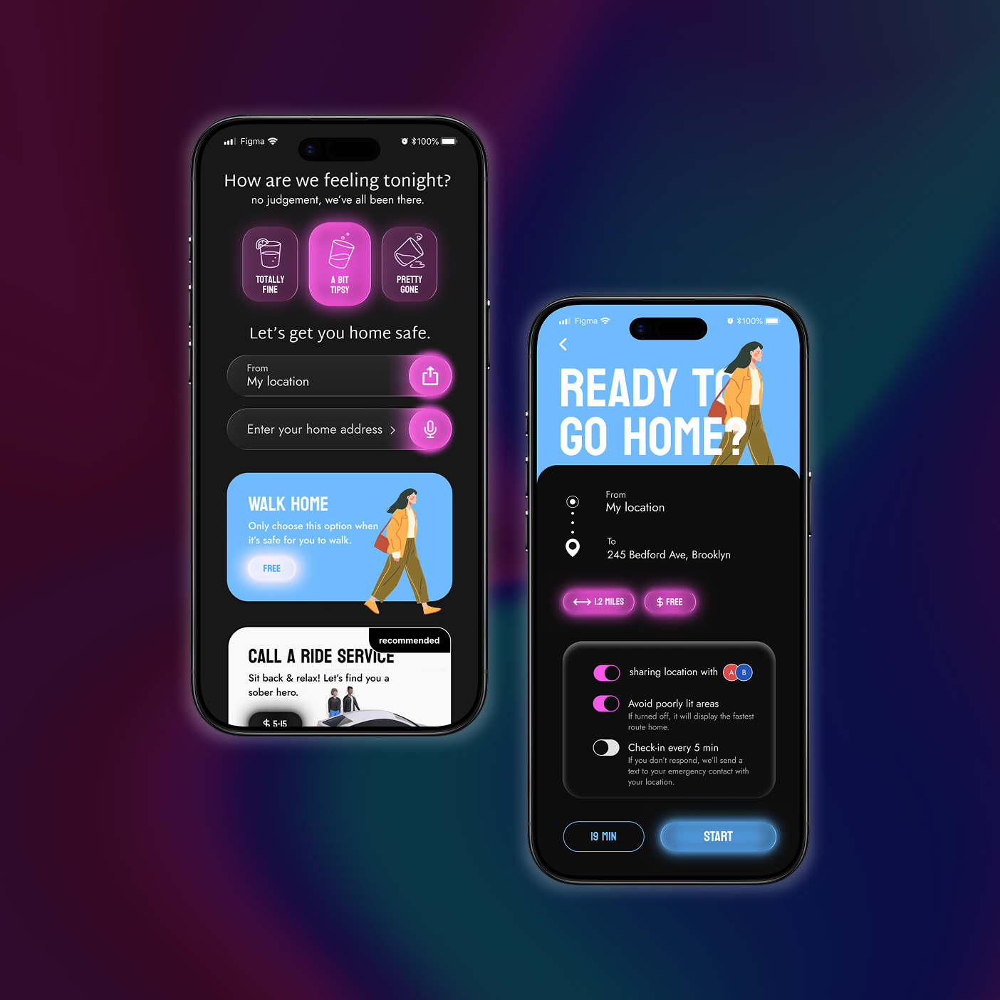
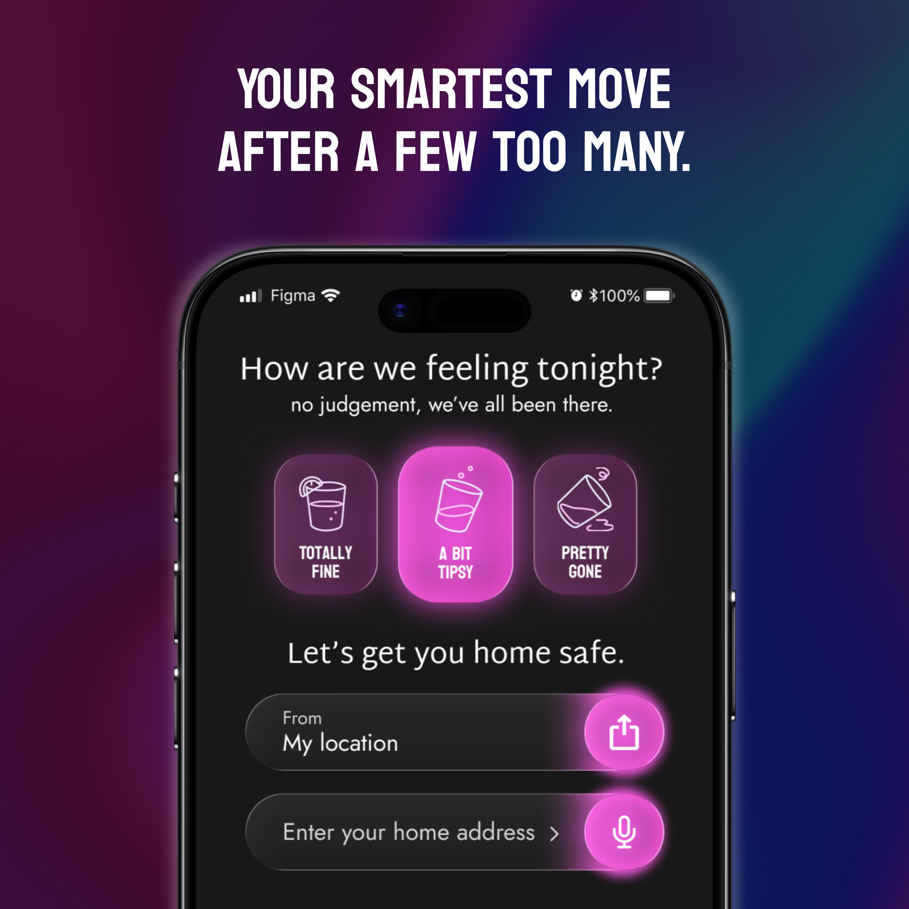
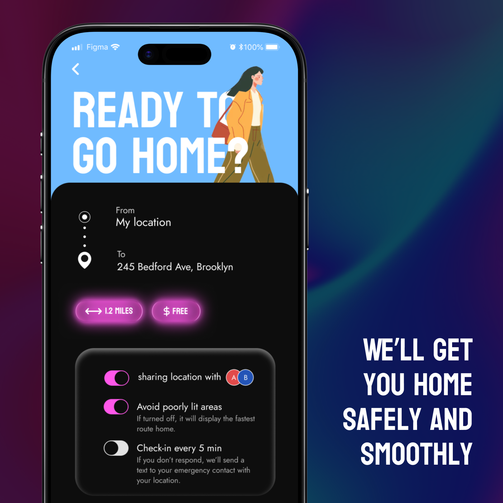

Late-night navigation
A UX/UI concept for a late-night navigation app that helps people get home safely with a calm, simple and slightly playful flow.
This concept responds to a UX brief: design a late‑night navigation app that helps people get home safely with as little friction as possible. The flow adapts to the user’s state — shown in the design as “How are we feeling tonight?” — and the interface presents a simple set of options (walk, call a ride, guided route) depending on that choice.
The UI is tailored for low-attention moments: users select how they feel and the app adjusts its guidance. Primary choices appear as large cards while safety toggles, namely Share location, Avoid poorly lit areas, Periodic check‑ins, are surfaced up front. Clear time and price estimates plus a prominent START action reduce decision friction.
I designed a playful but controlled interface that balances reassurance and clarity. By combining large, clear CTAs with contextual safety toggles and minimal secondary text, the concept supports quick decisions and reduces cognitive load in late‑night situations.


The flow: ask how the user feels, show the recommended transport option, highlight estimated time and cost, and surface safety options (share location, avoid poorly lit areas, check‑ins). A clearly labelled START button and a compact progress indicator keep the experience fast and reassuring.
The project reinforced the importance of tone, trust and minimalism when designing for vulnerable moments. The app is less about raw navigation accuracy and more about creating a safe, understandable path home.


Back to projects overview
Back